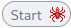

ZapProxy
ZapProxy
:
sudo apt install zaproxy
Ademas de ser una herramienta de análisis de vulnerabilidades también es un proxy de interceptación como puede ser BurpSuite.
Dispone de un escaneo automático y otro manual.
Comienza un proceso de “Spidering” que consiste en hacer peticiones a la pagina web principal, analiza el código fuente y busca otros enlaces en él y así sucesivamente.
En el apartado alertas encontramos los posibles problemas que contiene la aplicación web.

También disponemos del escaneo manual que puede ser más interesante ya que tiene un set de herramientas para poder usarlo sobre la aplicación web.
Omitimos el tutorial.
Tenemos herramientas a ambos lados del navegador y en la parte inferior.
A la izquierda se notifican las alertas que se producen en la página actual.
A la derecha las alertas de forma general.
Si por ejemplo nos dirigimos a una página vulnerable.
Por defecto Zap no realiza un análisis activo, es decir en este caso no va a inyectar payloads en el input. Básicamente realiza un análisis pasivo mediante la recolección del código fuente de las web por las que vamos navegando.
Para realiza un análisis activo tenemos la opción en la parte derecha del hub.
En la parte izquierda con podemos añadir o eliminar el apartado actual en el que nos encontramos del target o scope del análisis.
Este apartado sirve para utilizar Zap como un proxy de interceptación como BurpSuite.
Este apartado permite que cuando encuentre un campo que esté bloqueado por parte del código porque en su desarrollo así fue establecido, este lo cambia y nos permite modificarlo.
En la parte derecha vemos un árbol de las url que ha analizado
Este apartado comienza un proceso de Spidering desde la página en la que nos encontramos sobre HTML.
Este apartado  abre otro navegador y hace otro spidering mas concreto sobre javascript y otros scripts.
Este apartado comienza un escaneo activo en la url actual
comienza un escaneo activo en la url actual
Este apartado cuando está activo además de realizar un escaneo pasivo empezará automáticamente a realizar un escaneo activo por detrás.
Este muestra los comentarios que hay en el código fuente actual.
Después del escaneo activo descubre dos alertas.
Lo podemos replicar y modificar.
Si activamos el proxy de captura .
Intercepta la petición antes de mandarla al servidor y la podemos modificar.